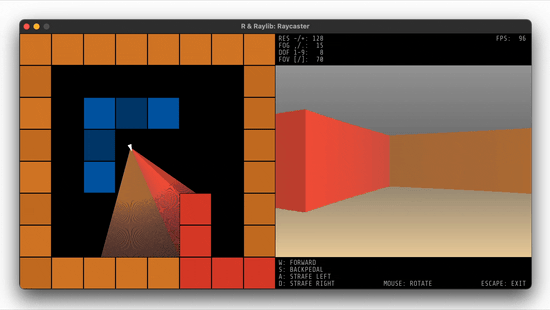

A Wolfenstein-style raycaster written entirely in R: WASD movement,
mouse look, textured walls, depth-based fog, and an optional top-down
debug view showing the live ray grid. The renderer fires a configurable
number of rays per frame using vectorized R arithmetic, then draws all
wall slices in a single draw_texture_pro() call with
per-slice source/destination rectangles and tint colors. It demonstrates
advanced use of draw_texture_pro() vectorization,
load_font_ex(), draw_text_ex() for multi-line
HUD text, toggle_fullscreen(), and
set_window_state().

Try it
Click the canvas to focus it. Move the mouse to look around, WASD to move. Tab toggles the debug map view.
Run
demo("raycaster", package = "raylibr")Source code
library(raylibr)
set_trace_log_level(log$none)
# custom functions -------------------------------------------------------------
blend_colors <- function(c1, c2, p = 0.5) {
p <- min(1, max(0, p))
if (is.null(c1)) c1 <- "black"
if (is.null(c2)) c2 <- "black"
c1 <- as_color(c1)
c2 <- as_color(c2)
r <- (c1$r * p) + (c2$r * (1-p))
g <- (c1$g * p) + (c2$g * (1-p))
b <- (c1$b * p) + (c2$b * (1-p))
color(r, g, b, c1$a)
}
get_tile <- function(x, y) {
tile_grid[floor(y / 64) * tile_dims[1] + floor(x / 64) + 1]
}
get_diff <- function(pos) {
diff <- pos - 64 * floor(pos / 64)
over_half <- diff > (tile_size / 2)
diff[over_half] <- 64 - diff[over_half]
diff
}
# settings --------------------------------------------------------------------
window_size <- c(1024, 512)
window_fps <- 100
viewport_size <- c(512, 384)
viewport_position <- c(512, 64)
viewport_resolution <- 128
viewport_fov <- 70
viewport_dof <- 8
viewport_fog <- 0.15
player_position <- c(320, 256)
player_angle <- 2.3
player_offset <- 8
player_walk_speed <- 2
player_strafe_speed <- 1
tile_dims <- c(8, 8)
tile_size <- 64
tile_grid <- c(1,1,1,1,1,1,1,1,
1,0,0,0,0,0,0,1,
1,0,2,2,2,0,0,1,
1,0,2,0,0,0,0,1,
1,0,2,0,0,0,0,1,
1,0,0,0,0,1,0,1,
1,0,0,0,0,1,0,1,
1,1,1,1,1,1,1,1)
color_fog <- blend_colors("grey", "black", 0.5)
color_floor <- blend_colors("darkgrey", "olivegreen", 0.1)
color_floor <- "moccasin"
color_ceiling <- "darkgrey"
color_wall <- list(fade(color_floor, 0), "tan1", "tan2", "dodgerblue3",
"dodgerblue4", "tomato")
textures <- c("transparent.png", "Bricks_01-128x128.png",
"Wood_20-128x128.png")
texture_size <- 128
# pre-compute constants -------------------------------------------------------
frame <- 0
fps <- 0
two_pi <- pi * 2
half_pi <- pi / 2
tile_xz <- as.matrix(expand.grid(seq(tile_dims[1]) - 1, seq(tile_dims[2]) - 1))
tile_colors <- ifelse(tile_grid, "white", "black")
tile_colors <- lapply(color_wall[tile_grid+1], blend_colors, "black", 0.8)
tile_sizes <- matrix(rep(tile_size, tile_dims[1] * tile_dims[2] * 2), ncol = 2)
player_offsets <- as.matrix(expand.grid(c(-1, 1), c(-1, 1))) * player_offset
help_lines <- c(
sprintf("W: FORWARD"),
sprintf("S: BACKPEDAL ENTER: TOGGLE FULLSCREEN"),
sprintf("A: STRAFE LEFT TAB: TOGGLE DEBUG"),
sprintf("D: STRAFE RIGHT MOUSE: ROTATE ESCAPE: EXIT")
)
# window setup -----------------------------------------------------------------
update_view <- TRUE
debug <- TRUE
init_window(window_size[1], window_size[2], "R & Raylib: Raycaster")
set_window_state(flag$window_resizable)
set_target_fps(window_fps)
hide_cursor()
base_path <- system.file(package = "raylibr")
font <- load_font_ex(file.path(base_path,
"demo_resources", "ShareTechMono-Regular.ttf"),
32)
textures <- lapply(paste0(base_path, "/demo_resources/", textures), load_texture)
# game loop --------------------------------------------------------------------
while (!window_should_close()) {
if (is_window_resized() && !is_window_fullscreen()) {
window_size <- c(get_screen_width(), get_screen_height())
update_view <- TRUE
}
## movement ------------------------------------------------------------------
player_angle <- (player_angle + get_mouse_delta()[1] / 60) %% two_pi
player_angle_s <- (player_angle + half_pi) %% two_pi
player_delta <- c(0, 0)
if (is_key_down(key$w)) player_delta <- player_delta +
c(cos(player_angle), sin(player_angle)) * player_walk_speed
if (is_key_down(key$s)) player_delta <- player_delta -
c(cos(player_angle), sin(player_angle)) * player_walk_speed
if (is_key_down(key$d)) player_delta <- player_delta +
c(cos(player_angle_s), sin(player_angle_s)) * player_strafe_speed
if (is_key_down(key$a)) player_delta <- player_delta -
c(cos(player_angle_s), sin(player_angle_s)) * player_strafe_speed
player_position <- player_position + player_delta
## collision detection -------------------------------------------------------
player_bb <- rep(player_position, each = 4) + player_offsets
player_bbi <- floor(player_bb / 64)
bc <- tile_grid[player_bbi[,2] * tile_dims[1] + player_bbi[,1] + 1] > 0
if (sum(bc) == 1) {
if (bc[1]) {
diff <- get_diff(player_bb[1,])
bc[ifelse(diff[2] < diff[1], 2, 3)] <- TRUE
} else if (bc[2]) {
diff <- get_diff(player_bb[2,])
bc[ifelse(diff[2] < diff[1], 1, 4)] <- TRUE
} else if (bc[3]) {
diff <- get_diff(player_bb[3,])
bc[ifelse(diff[2] < diff[1], 4, 1)] <- TRUE
} else if (bc[4]) {
diff <- get_diff(player_bb[4,])
bc[ifelse(diff[2] < diff[1], 3, 2)] <- TRUE
}
}
player_diff <- get_diff(player_position)
if (bc[1] && bc[2])
player_position[2] <- player_position[2] - player_diff[2] + player_offset
if (bc[3] && bc[4])
player_position[2] <- player_position[2] + player_diff[2] - player_offset
if (bc[1] && bc[3])
player_position[1] <- player_position[1] - player_diff[1] + player_offset
if (bc[2] && bc[4])
player_position[1] <- player_position[1] + player_diff[1] - player_offset
player_bb <- rep(player_position, each = 4) + player_offsets
## keys for changing settings ------------------------------------------------
k <- get_key_pressed()
if (k == key$minus) {
update_view <- TRUE
viewport_resolution <- viewport_resolution / 2
} else if (k == key$equal) {
update_view <- TRUE
viewport_resolution <- viewport_resolution * 2
} else if (k == key$tab) {
update_view <- TRUE
debug <- !debug
viewport_position <- c(0, 0)
viewport_size <- window_size
} else if (k == key$enter) {
update_view <- TRUE
toggle_fullscreen()
if (is_window_fullscreen()) {
monitor <- get_current_monitor()
old_window_size <- window_size
window_size <- c(get_monitor_width(monitor), get_monitor_height(monitor)) * 0.8
} else {
window_size <- old_window_size
}
}
if (k == key$one) { update_view <- TRUE; viewport_dof <- 1 }
if (k == key$two) { update_view <- TRUE; viewport_dof <- 2 }
if (k == key$three) { update_view <- TRUE; viewport_dof <- 3 }
if (k == key$four) { update_view <- TRUE; viewport_dof <- 4 }
if (k == key$five) { update_view <- TRUE; viewport_dof <- 5 }
if (k == key$six) { update_view <- TRUE; viewport_dof <- 6 }
if (k == key$seven) { update_view <- TRUE; viewport_dof <- 7 }
if (k == key$eight) { update_view <- TRUE; viewport_dof <- 8 }
if (k == key$nine) { update_view <- TRUE; viewport_dof <- 9 }
if (is_key_down(key$left_bracket)) {
update_view <- TRUE;
viewport_fov <- viewport_fov - 1
}
if (is_key_down(key$right_bracket)) {
update_view <- TRUE;
viewport_fov <- viewport_fov + 1
}
if (is_key_down(key$period)) {
update_view <- TRUE;
viewport_fog <- viewport_fog + 0.01
}
if (is_key_down(key$comma)) {
update_view <- TRUE;
viewport_fog <- viewport_fog - 0.01
}
## update view ---------------------------------------------------------------
if (update_view) {
if (debug) {
viewport_size[1] <- window_size[1] / 2
viewport_size[2] <- window_size[2] - 128
viewport_position[1] <- window_size[1] / 2
viewport_position[2] <- 64
} else {
viewport_size <- window_size
viewport_position <- c(0, 0)
}
viewport_center <- viewport_position + (viewport_size / 2)
viewport_resolution <- max(2, min(viewport_resolution, viewport_size[1]))
viewport_fov <- max(30, min(viewport_fov, 170))
viewport_fog <- max(0, min(viewport_fog, 1))
angles <- atan(seq(-viewport_fov / 2, viewport_fov / 2, length.out =
(viewport_resolution + 2))[2:(viewport_resolution +
1)] * pi / 180)
bars_width <- viewport_size[1] / viewport_resolution
bars_x <- viewport_position[1] + head(seq(from = 0, to = viewport_size[1],
length.out = viewport_resolution +
1), -1)
sixty_fours <- rep(64, viewport_resolution)
color_fogs <- rep(list(color_fog), length.out = viewport_resolution)
lines_x <- rep(viewport_position[1] + 6, 8)
lines_y <- c(seq(4) * 14 - 12,
seq(4) * 14 + viewport_size[2] + viewport_position[2] - 11)
lines_xy <- cbind(lines_x, lines_y)
zeros_vector <- rep(0, viewport_resolution)
zeros_matrix <- matrix(0, nrow = viewport_resolution, ncol = 2)
}
update_view <- FALSE
## raycasting ----------------------------------------------------------------
rays_angle <- (player_angle + angles) %% two_pi
rays_quadrant <- floor(rays_angle / half_pi)
rays_up <- rays_quadrant >= 2
rays_left <- (rays_quadrant == 1) | (rays_quadrant == 2)
### horizontal check ---------------------------------------------------------
rays_atan <- -1 / tan(rays_angle)
ry <- bitwShiftL(bitwShiftR(player_position[2], 6), 6) +
ifelse(rays_up, -0.0000001, 64)
rx <- (player_position[2] - ry) * rays_atan + player_position[1]
yo <- sixty_fours; yo[rays_up] <- -64
xo <- -yo * rays_atan
todo <- rep(TRUE, viewport_resolution)
mx <- rep(0, viewport_resolution)
my <- rep(0, viewport_resolution)
tile <- rep(0, viewport_resolution)
dof <- 0
while (any(todo) & (dof < viewport_dof)) {
mx[todo] <- floor(rx[todo] / 64)
my[todo] <- floor(ry[todo] / 64)
mp <- ifelse(mx >= 0 & my >= 0 & mx < tile_dims[1] & my < tile_dims[2],
my * tile_dims[1] + mx + 1, NA)
tile[todo] <- tile_grid[mp[todo]]
todo <- todo & (is.na(tile) | (tile == 0))
rx[todo] <- rx[todo] + xo[todo]
ry[todo] <- ry[todo] + yo[todo]
dof <- dof + 1
}
texture_h <- tile + 1
dists_h <- sqrt((rx - player_position[1])^2 +
(ry - player_position[2])^2) * cos(angles)
h_rx <- rx
h_ry <- ry
h_ti <- floor(2 * (rx %% tile_size))
h_ti[!rays_up] <- texture_size - h_ti[!rays_up]
### vertical check ---------------------------------------------------------
rays_ntan <- -tan(rays_angle)
rx <- bitwShiftL(bitwShiftR(player_position[1], 6), 6) +
ifelse(rays_left, -0.0000001, 64)
ry <- (player_position[1] - rx) * rays_ntan + player_position[2]
xo <- sixty_fours; xo[rays_left] <- -64
yo <- -xo * rays_ntan
todo <- rep(TRUE, viewport_resolution)
dof <- 0
while (any(todo) & (dof < viewport_dof)) {
mx[todo] <- floor(rx[todo] / 64)
my[todo] <- floor(ry[todo] / 64)
mp <- ifelse(mx >= 0 & my >= 0 & mx < tile_dims[1] & my < tile_dims[2],
my * tile_dims[1] + mx + 1, NA)
tile[todo] <- tile_grid[mp[todo]]
todo <- todo & (is.na(tile) | (tile == 0))
rx[todo] <- rx[todo] + xo[todo]
ry[todo] <- ry[todo] + yo[todo]
dof <- dof + 1
}
texture_v <- tile + 1
dists_v <- sqrt((rx - player_position[1])^2 +
(ry - player_position[2])^2) * cos(angles)
v_rx <- rx
v_ry <- ry
v_ti <- floor(2 * (ry %% tile_size))
v_ti[rays_left] <- texture_size - v_ti[rays_left]
### combine horizontal and vertical ------------------------------------------
t_light <- rep(1, viewport_resolution)
h_wins <- dists_h < dists_v
bars_texture <- texture_v
bars_texture[h_wins] <- texture_h[h_wins]
dists_t <- dists_v
dists_t[h_wins] <- dists_h[h_wins]
t_light[h_wins] <- 0.7
t_rx <- ifelse(h_wins, h_rx, v_rx)
t_ry <- ifelse(h_wins, h_ry, v_ry)
t_ti <- ifelse(h_wins, h_ti, v_ti)
### compute wall textures ----------------------------------------------------
bars_height <- tile_size * viewport_size[2] / dists_t
height_fractions <- viewport_size[2] / bars_height
height_fractions[height_fractions > 1] <- 1
bars_height[bars_height > viewport_size[2]] <- viewport_size[2]
rects_src <- Map(rectangle, t_ti, tile_size - (tile_size * height_fractions),
1, texture_size * height_fractions)
rects_dst <- Map(rectangle, bars_x, viewport_center[2] - (bars_height / 2),
bars_width, bars_height)
fog_ratio <- dists_t * viewport_fog / 100
fog_ratio[fog_ratio > 1] <- 1
textures_light <- Map(blend_colors, "white", "black", t_light)
textures_tint <- Map(blend_colors, color_fogs, textures_light, fog_ratio)
## drawing -------------------------------------------------------------------
begin_drawing()
clear_background("black")
if (debug) {
### draw tiles -------------------------------------------------------------
draw_rectangle_v(tile_xz * tile_size + 1, tile_sizes - 2, tile_colors)
### draw rays --------------------------------------------------------------
draw_line_ex(player_position, cbind(t_rx, t_ry), 1, textures_tint)
### draw player ------------------------------------------------------------
draw_triangle(player_position + c(cos(player_angle), sin(player_angle)) * 8,
player_position - c(cos(player_angle), sin(player_angle)) * 7 -
c(cos(player_angle_s), sin(player_angle_s)) * 4,
player_position - c(cos(player_angle), sin(player_angle)) * 7 +
c(cos(player_angle_s), sin(player_angle_s)) * 4,
"white")
if (bc[1] && bc[2]) { draw_line_ex(player_bb[1,], player_bb[2,], 2, "red") }
if (bc[3] && bc[4]) { draw_line_ex(player_bb[3,], player_bb[4,], 2, "red") }
if (bc[1] && bc[3]) { draw_line_ex(player_bb[1,], player_bb[3,], 2, "red") }
if (bc[2] && bc[4]) { draw_line_ex(player_bb[2,], player_bb[4,], 2, "red") }
}
### draw floor and ceiling ---------------------------------------------------
color_floor_far <- blend_colors(color_fog, color_floor, viewport_fog * 5)
color_floor_near <- blend_colors(color_fog, color_floor, viewport_fog * 0.9)
color_ceiling_far <- blend_colors(color_fog, color_ceiling, viewport_fog * 5)
color_ceiling_near <- blend_colors(color_fog, color_ceiling, viewport_fog * 0.9)
draw_rectangle_gradient_v(viewport_position[1], viewport_center[2],
viewport_size[1], viewport_size[2] / 2,
color_floor_far, color_floor_near)
draw_rectangle_gradient_v(viewport_position[1], viewport_position[2],
viewport_size[1], viewport_size[2] / 2,
color_ceiling_near, color_ceiling_far)
### draw walls ---------------------------------------------------------------
draw_texture_pro(textures[bars_texture], rects_src, rects_dst, zeros_matrix,
zeros_vector, textures_tint)
### draw stats and help ------------------------------------------------------
if (frame > 20) {
fps <- get_fps()
frame <- 0
}
frame <- frame + 1
if (debug) {
lines <- c(
sprintf("RES -/+: %3d FPS: %3d", viewport_resolution, fps),
sprintf("FOG ,/.: %3.f", viewport_fog * 100),
sprintf("DOF 1-9: %3d", viewport_dof),
sprintf("FOV [/]: %3d", viewport_fov),
help_lines
)
draw_text_ex(font, lines, lines_xy, 16, 0, "darkgrey")
}
end_drawing()
}
show_cursor()
close_window()